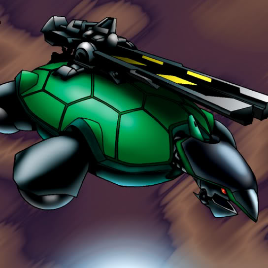

Catapult Turtle

Description: "Can enter labyrinth squares, and transforms the occupied space into NORMAL terrain."
STATS
ATK: 1000
DEF: 2000DECK COST
Deck Cost per Card: 35EFFECT NOT IMPLEMENTED
Fusion List (6 Possible Fusions)
- Catapult Turtle + Fireyarou = Giant Turtle Who Feeds on Flames
- Catapult Turtle + Kairyu-Shin = Sea King Dragon
- Catapult Turtle + Labyrinth Wall = Boulder Tortoise
- Catapult Turtle + LaMoon = 30,000-Year White Turtle
- Catapult Turtle + Metal Dragon = Sea King Dragon
- Catapult Turtle + Yamadron = Kairyu-Shin